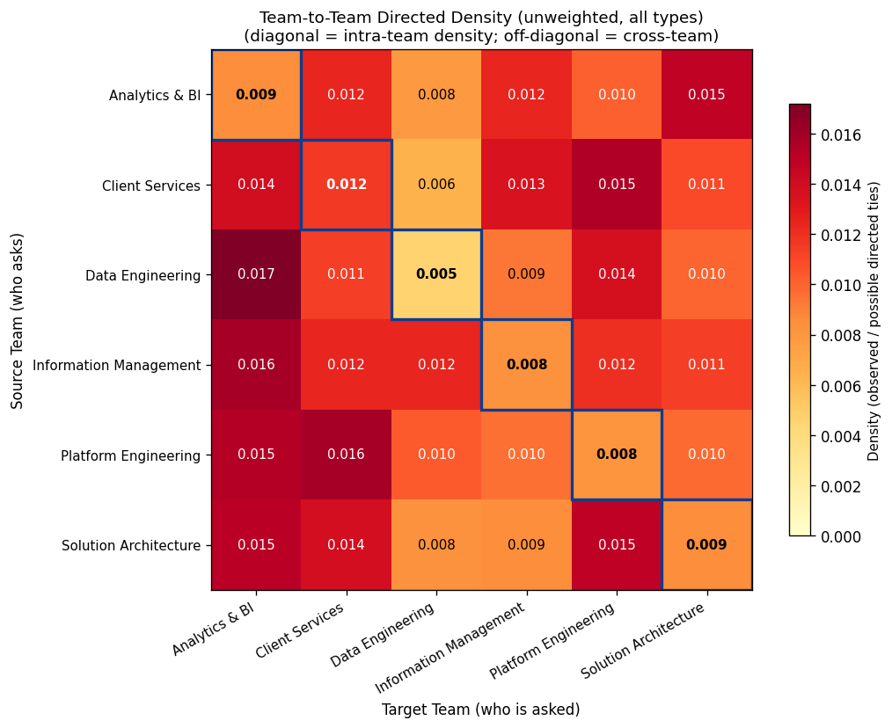

Plan, sponsor-driven updates, key lists, Isolation Score, density matrix, interactive topology, and validation.
From docs/PID.md, Sprint 2 (Weeks 3–4) focuses on:
Central Hubs, Brokers, and Silent Islands (individuals and teams).Isolation_Risk_Flag as the binary target for Sprint 3 modeling.| Feedback | Implementation | Current Output |
|---|---|---|
| 1) Convert text fields to numeric | Encode edge attributes for analysis | Interaction_Type_Code (Hard=1, Soft=0) and Interaction_Frequency_Weight (Daily=1.00, Weekly=0.67, Monthly=0.33, Rarely=0.10) |
| 2) Cluster nodes by Region/Team | Strengthen group clustering in layout | No Region in synthetic data, so clustering is done by Team using spring_layout + virtual intra-team edges |
| 3) Add interactivity | Hover + click focus behavior | sprint2_interactive_topology_v2.html: click node/edge to focus while other elements fade, with a persistent info panel |
| 4) Boundary Spanning / Broker logic | Add structural bridge metric | Added betweenness_centrality and shipped sprint2_brokers_shortlist.md |
Main metric: in_degree (times an employee is asked for help)
Computed as the number of directed edges where the employee appears as Target_EMP_ID.
| Top sample | EMP_ID | in_degree |
|---|---|---|
| 1 | EMP_159 | 33 |
| 2 | EMP_126 | 33 |
| 3 | EMP_198 | 32 |
Main metric: betweenness_centrality
Computed from weighted shortest paths; edge distance uses 1 / Interaction_Frequency_Weight. Higher values indicate stronger bridge roles.
| Top sample | EMP_ID | betweenness |
|---|---|---|
| 1 | EMP_259 | 0.095352 |
| 2 | EMP_219 | 0.089780 |
| 3 | EMP_210 | 0.084158 |
Main metric for individuals: Isolation_Score, then thresholded by tau_ROC for high-risk flags.
Main team view: team-level aggregation of %High and average Isolation Score.
Individuals are scored first, then rolled up by Team (Silent / At Risk / Healthy by threshold rules).
Formula (v1.0):
Isolation_Score = 0.25*OutboundScarcity + 0.25*WeakWeightShare + 0.25*TargetConcentration + 0.25*WeakBridgeDeficit
| Sub-metric | Interpretation | Core formula |
|---|---|---|
OutboundScarcity |
Higher when a person rarely asks others for help | 1 - out_degree/max_out_degree |
WeakWeightShare |
Higher when outbound ties are mostly weak (low frequency) | Weak_Tie_Outbound_Count / out_degree |
TargetConcentration |
Higher when requests are concentrated on very few people | Herfindahl：Σ(count_to_target/total_outbound)^2 |
WeakBridgeDeficit |
Higher when cross-team weak bridges are missing | 1 - Weak_Cross_Team_Tie_Count/max(...) |
All four components are normalized to [0,1]. Higher means higher isolation risk. Equal weights are used as the v1.0 baseline.
sprint2_team_density_heatmap.png)How to read: Rows are source teams (who ask for help). Columns are target teams (who are asked). The diagonal is intra-team density; off-diagonal cells are cross-team density.

intra/off-diagonal < 1 (DE=0.37, CS=0.97), so no classic silo team appears in this synthetic wave.sprint2_interactive_topology_v2.html)in_degree, shape=Profile_Type, border color/width=Isolation Risk Tier.Interaction_Frequency_Weight, color=Hard vs Soft.Goal: Use seeded island archetypes as ground truth in synthetic data and test whether Isolation Score can detect them reliably.
| Predicted Island | Predicted Not Island | |
|---|---|---|
| Actual Island | TP=41 | FN=0 |
| Actual Not Island | FP=2 | TN=257 |
From docs/PID.md, Sprint 3 (Weeks 5–6) focuses on predictive modeling:
y.x (for example Seniority, Years_Exp, skill and team variables).Counter-metrics are intentionally excluded from this page, as requested.